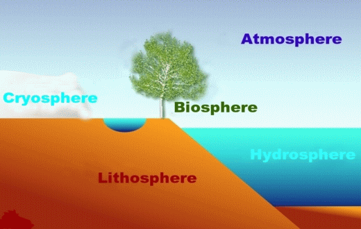
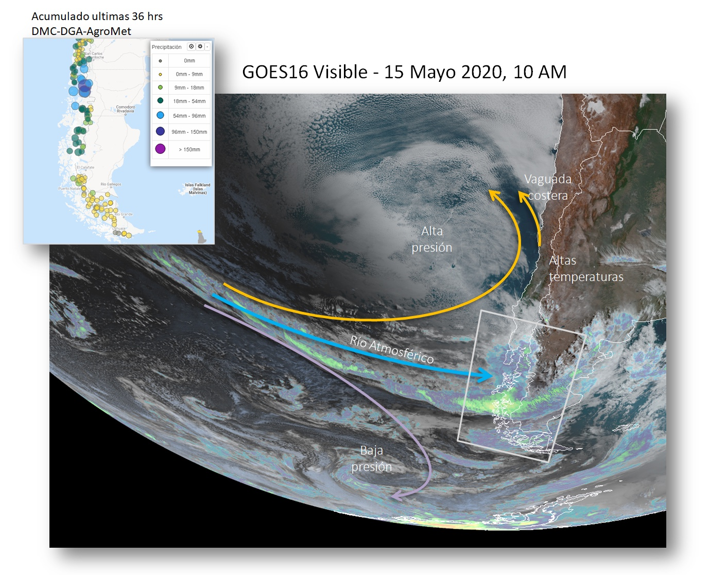
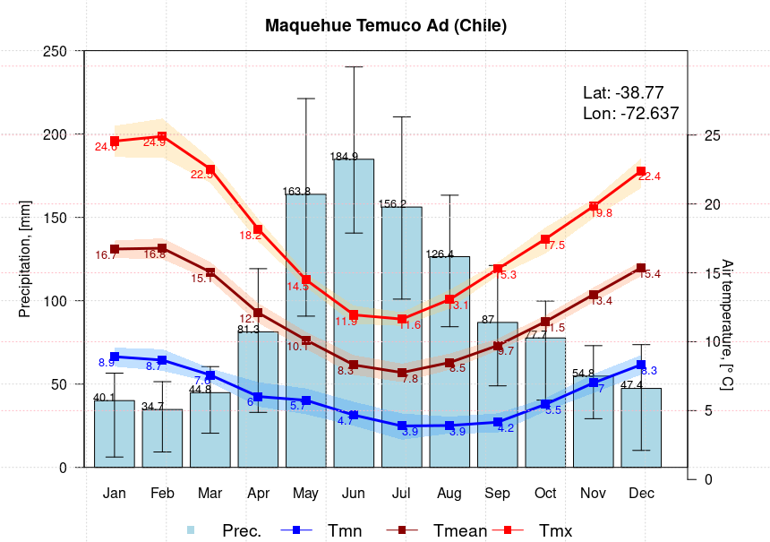
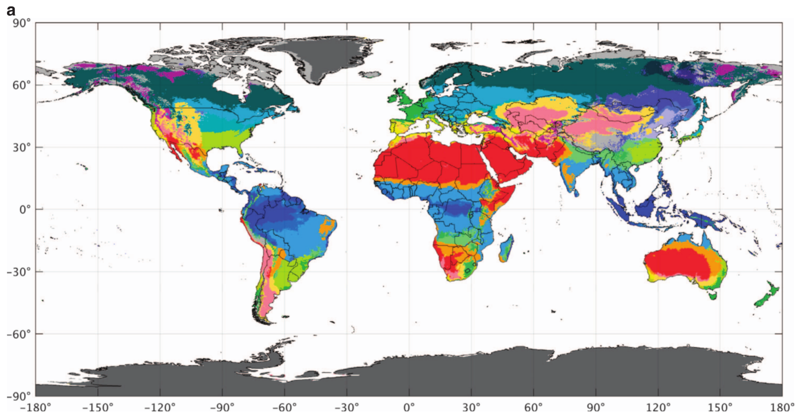
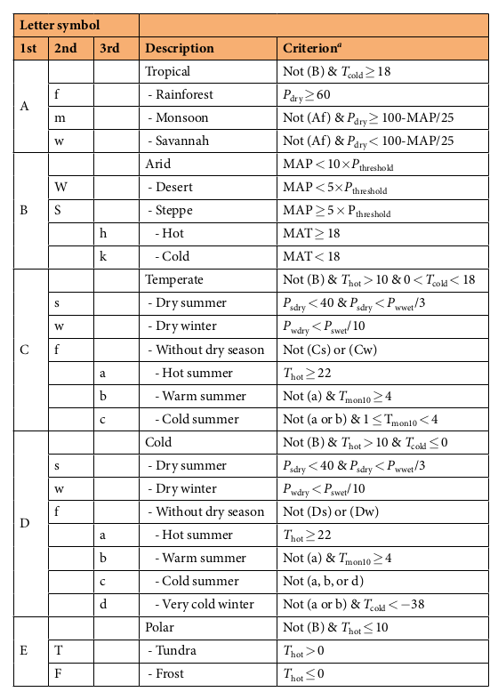
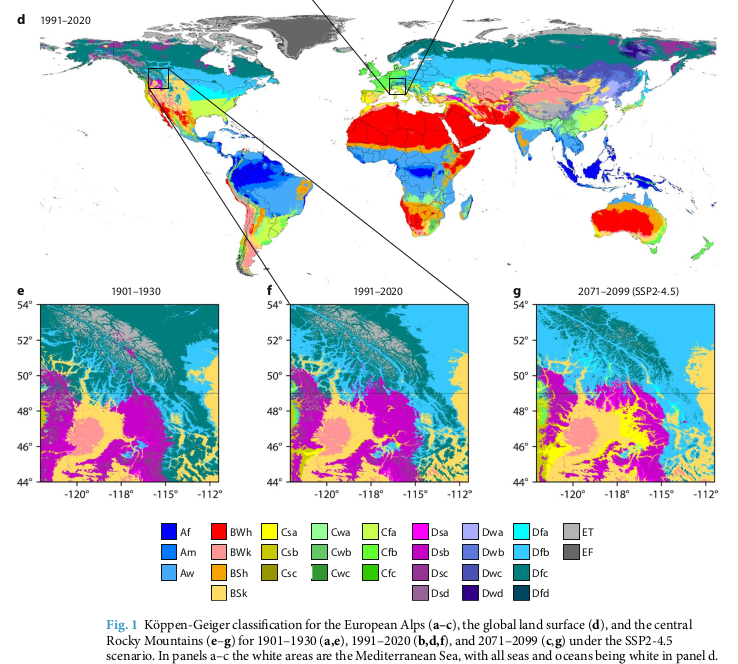
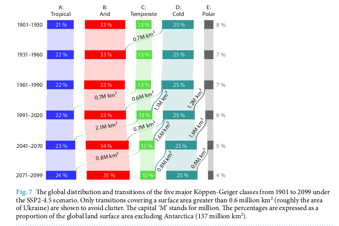

6. Clasificación climática
Clasificar el clima no consiste en reducir un territorio a tres letras, sino en reconocer los patrones de agua y energía que esas letras resumen.
Idea guía del capítulo
6.1. Introducción
El clima condiciona la disponibilidad de agua, la formación de suelos, la distribución de los ecosistemas y una parte sustancial de las decisiones de ingeniería. La misma precipitación anual puede producir respuestas hidrológicas muy distintas si cae en invierno o en verano, como lluvia o como nieve, de manera uniforme o concentrada en pocos eventos. Por ello, describir el clima de un lugar exige considerar no sólo valores medios, sino también estacionalidad, variabilidad y mecanismos físicos.
Una clasificación climática organiza esa complejidad en categorías comparables. Su utilidad es principalmente comunicacional y regional: permite reconocer semejanzas, formular hipótesis y transferir conocimiento entre lugares. No reemplaza una evaluación hidrológica local ni determina por sí sola el caudal de diseño, la recarga o la ocurrencia de sequías. Una clase es un resumen de ciertas variables y umbrales; la cuenca real conserva su topografía, geología, suelo, vegetación, intervención humana y memoria hidrológica.
El sistema de Köppen-Geiger es una de las clasificaciones climáticas más difundidas. Emplea temperatura y precipitación medias mensuales para distinguir grandes grupos y subtipos asociados originalmente con la distribución de la vegetación. Su estructura sencilla permite leer un código como Csb y extraer tres ideas: clima templado, verano seco y verano cálido. Esa capacidad de síntesis explica su uso en docencia, cartografía, ecología, comparación de modelos climáticos y contextualización de estudios hidrológicos (Andrades Rodríguez and Múñez León, 2012; Beck et al., 2023; Peel et al., 2007). La distribución global de esas clases se observa en la Figura 6.4.
Este capítulo comienza con los factores que determinan el clima de un lugar y luego los aplica al caso chileno. Después introduce el climograma como representación integrada de temperatura y precipitación. Finalmente, desarrolla paso a paso la clasificación de Köppen-Geiger, analiza su distribución en Chile, examina los mapas de alta resolución de Beck et al. (2023) y discute su alcance para aplicaciones hidrológicas.
Objetivos de aprendizaje
Al finalizar el capítulo se espera que el lector pueda:
distinguir elementos, factores y escalas del clima;
explicar los principales controles del clima de Chile;
construir e interpretar un climograma a partir de normales mensuales;
aplicar en el orden correcto las reglas de Köppen-Geiger;
interpretar los códigos climáticos frecuentes en Chile;
relacionar una clase climática con hipótesis hidrológicas verificables; y
reconocer las limitaciones de una clasificación discreta frente a una cuenca heterogénea y un clima cambiante.
6.2. El clima como propiedad de un sistema
6.2.1. Tiempo, clima y normal climatológica
La diferencia física y estadística entre tiempo y clima se introdujo en Tiempo atmosférico y clima. El tiempo atmosférico es el estado de la atmósfera en un lugar y momento determinados. Una tormenta, una helada o una tarde cálida son manifestaciones del tiempo. El clima, en cambio, describe estadísticamente una secuencia prolongada de estados atmosféricos: sus promedios, variabilidad, persistencia, extremos y relaciones entre variables. Por eso, una semana lluviosa no cambia la clasificación climática de una ciudad, del mismo modo que una sequía de una temporada no convierte automáticamente un clima templado en desértico. La Figura 6.4 muestra el resultado espacial de aplicar esa descripción de largo plazo.
La comparación entre lugares requiere un período de referencia común. La Organización Meteorológica Mundial denomina normal climatológica estándar al promedio calculado sobre períodos consecutivos de 30 años actualizados cada década, como 1991–2020. Para evaluar cambio climático a largo plazo se conserva además 1961–1990 como período de referencia fijo. La elección importa: en un clima no estacionario, una normal reciente representa mejor las condiciones operacionales actuales, mientras una referencia fija permite comparar anomalías a través del tiempo (World Meteorological Organization, 2017; World Meteorological Organization, 2026).
Una normal no es un pronóstico ni un año típico que deba repetirse exactamente. La precipitación mensual normal es el promedio de muchos meses con valores distintos; puede incluso no haber ocurrido en ningún año particular. Además, dos estaciones con igual normal anual pueden diferir en frecuencia de días lluviosos, intensidad, duración de sequías o proporción de nieve. La estadística debe elegirse según la pregunta.
6.2.2. Componentes, elementos y factores
El sistema climático surge de la interacción entre atmósfera, hidrósfera, criósfera, litósfera y biósfera (Figura 6.1). La atmósfera transporta calor y humedad; océanos, lagos y ríos almacenan y redistribuyen agua y energía; nieve y hielo introducen almacenamiento estacional y retroalimentación por albedo; el relieve modifica flujos y precipitaciones; y la vegetación altera rugosidad, evapotranspiración y balance energético (Andrades Rodríguez and Múñez León, 2012; Inzunza, 2022). La clasificación climática observa el resultado agregado de esas interacciones. El El ciclo hidrológico desarrolla los intercambios de agua entre estos componentes, mientras Variables utilizadas para caracterizar el tiempo y el clima presenta las variables con que se observa la atmósfera.


Figura 6.1 Componentes acoplados del sistema climático: atmósfera, hidrósfera, criósfera, litósfera y biósfera.
Conviene diferenciar dos conceptos:
Los elementos del clima son variables observables que describen su estado: temperatura, precipitación, humedad, presión, viento, radiación, nubosidad, evaporación y nieve, entre otras.
Los factores del clima son condiciones geográficas o dinámicas que modifican esos elementos: latitud, altitud, relieve, distancia al mar, corrientes oceánicas, circulación atmosférica, cobertura del suelo y actividad humana.
La distinción evita frases circulares. Decir que un lugar es húmedo porque llueve mucho describe un elemento. Explicar que llueve mucho porque los vientos húmedos ascienden sobre una ladera de barlovento identifica un mecanismo y un factor. La Figura 6.1 ayuda a ubicar ambos conceptos: los elementos miden el estado de sus componentes y los factores regulan sus intercambios.
6.2.3. Escalas espaciales y temporales
El clima puede describirse en diferentes escalas. El clima global responde al balance radiativo planetario y a la circulación general. Un clima zonal expresa patrones latitudinales; un clima regional incorpora océanos, continentes y grandes cordilleras; el clima local responde a valles, laderas, lagos o ciudades; y el microclima caracteriza espacios próximos a la superficie, como un bosque, un cultivo o una calle. Las fronteras no son rígidas, pero la escala de análisis debe ser coherente con la decisión. La Figura 6.4 permite comparar las escalas global y regional; la Figura 6.6 muestra cuánto detalle añade una grilla de aproximadamente 1 km.
También existen escalas temporales superpuestas. El ciclo diurno organiza temperaturas y brisas; el ciclo anual controla estaciones; fenómenos como El Niño-Oscilación del Sur modulan años individuales; y las tendencias de varias décadas alteran las normales. Una clasificación calculada con 30 años de datos elimina gran parte del ruido meteorológico, pero puede ocultar transiciones, extremos y cambios dentro del período.
Principio de escala
Una etiqueta climática asignada a una celda de 1 km no describe automáticamente toda una cuenca de miles de kilómetros cuadrados. Antes de transferir la clase a una aplicación hidrológica se debe definir el soporte espacial: punto, celda, subcuenca o área contribuyente completa.
6.3. Principales factores que determinan el clima
6.3.1. Latitud y geometría solar
La latitud controla el ángulo de incidencia de la radiación solar, la duración del día y la amplitud del ciclo estacional. Cerca del ecuador los rayos solares inciden de manera más directa y la duración del día cambia poco durante el año. Hacia los polos, la incidencia es más oblicua y la estacionalidad de la radiación aumenta. Como explican Andrades Rodríguez and Múñez León (2012), este patrón determina la distribución zonal de energía, pero no fija por sí solo el clima: dos lugares en una misma latitud pueden diferir por océano, relieve o circulación. Las bandas tropicales, templadas y frías de la Figura 6.4 hacen visible ese control latitudinal y sus desviaciones regionales.
La geometría solar también modifica la demanda evaporativa. En términos hidrológicos, la energía disponible regula la evapotranspiración potencial y, junto con la precipitación, establece si un territorio tiende a estar limitado por agua o por energía. De ahí que una clasificación basada únicamente en precipitación anual sea insuficiente para separar un desierto cálido de una estepa fría.
6.3.2. Altitud, relieve y orientación
La temperatura del aire disminuye en promedio con la altitud dentro de la troposfera, aunque el gradiente real varía con la humedad, estabilidad y situación meteorológica (Andrades Rodríguez and Múñez León, 2012; Inzunza, 2022). La relación conjunta entre altitud, temperatura y presión se desarrolló en Altitud, temperatura del aire y presión atmosférica. Al aumentar la altitud también disminuye la presión y cambia la partición entre lluvia y nieve. La relación de Clausius-Clapeyron, presentada en Humedad atmosférica y ley de Clausius-Clapeyron, explica por qué la capacidad de saturación disminuye al enfriarse el aire; no debe confundirse con una ley que determine por sí sola la precipitación. En una cuenca de montaña, pocos cientos de metros pueden modificar la fase de la precipitación, la duración del manto nival y la fecha del máximo caudal.
El relieve actúa como barrera y guía del flujo. Cuando aire húmedo asciende por una ladera se expande, enfría y puede condensar, aumentando nubosidad y precipitación en barlovento. Al descender a sotavento se comprime y calienta, favoreciendo una sombra de lluvia. La orientación de una ladera modifica radiación, evaporación y persistencia de nieve. Los valles canalizan vientos, acumulan aire frío y facilitan inversiones térmicas. Por ello, la topografía puede producir climas locales contrastantes dentro de una misma clase regional (Garreaud, 2009; Inzunza, 2022; Viale and Garreaud, 2015). Este mecanismo se profundiza en Influencia de la topografía y se reconoce en los contrastes andinos de la Figura 6.4.
6.3.3. Continentalidad e influencia marítima
El agua posee mayor capacidad térmica y responde más lentamente que el suelo a un cambio de energía. El océano atenúa la amplitud térmica diaria y anual de las costas: los veranos tienden a ser más frescos y los inviernos más suaves que en el interior continental a igual latitud. La influencia marítima aporta además vapor de agua, nubosidad y niebla, aunque no garantiza precipitación si domina la subsidencia o existe una inversión estable (Andrades Rodríguez and Múñez León, 2012; Inzunza, 2022). La curva térmica moderada de Maquehue en la Figura 6.3 es un ejemplo de influencia oceánica, aunque también intervienen latitud, relieve y circulación.
La continentalidad aumenta la amplitud térmica porque la superficie terrestre se calienta y enfría con rapidez. Su efecto depende de la dirección de los vientos y de las barreras topográficas. Una localidad cercana al mar puede comportarse como interior si una cordillera costera limita la ventilación, mientras un corredor topográfico puede transportar aire oceánico decenas de kilómetros tierra adentro (Andrades Rodríguez and Múñez León, 2012; Inzunza, 2022).
6.3.4. Circulación general y masas de aire
El calentamiento desigual del planeta genera gradientes de presión y una circulación atmosférica de gran escala. Cinturones de altas y bajas presiones, vientos alisios, vientos del oeste, corrientes en chorro y frentes redistribuyen calor y humedad (Andrades Rodríguez and Múñez León, 2012; Inzunza, 2022). La conservación de masa, momento y energía que sustenta esa circulación se presenta en Leyes de conservación que rigen el movimiento atmosférico, y su organización planetaria en Capítulo 5. Su desplazamiento estacional determina si una región recibe aire subsidente y seco o perturbaciones capaces de producir lluvia; la situación sinóptica de la Figura 6.2 muestra estos procesos actuando sobre Chile.
Las masas de aire adquieren propiedades de temperatura y humedad sobre sus regiones de origen. Al desplazarse, intercambian energía y agua con la superficie. Los frentes separan masas con características diferentes y concentran ascenso, nubosidad y precipitación. En latitudes medias, la frecuencia y trayectoria de sistemas frontales es un control esencial de la estacionalidad de la lluvia.
6.3.5. Corrientes oceánicas y temperatura superficial del mar
Las corrientes oceánicas transportan energía y modifican el aire que circula sobre ellas. Una corriente cálida favorece evaporación y calentamiento de la capa baja; una corriente fría reduce la temperatura superficial, estabiliza el aire y puede sostener nubosidad estratiforme y niebla sin lluvia abundante (Andrades Rodríguez and Múñez León, 2012; Inzunza, 2022). La temperatura superficial del mar también participa en modos de variabilidad acoplada océano-atmósfera, entre ellos El Niño-Oscilación del Sur, desarrollado en Oscilaciones climáticas de gran escala. En la Figura 6.2, el Pacífico es simultáneamente fuente de humedad y superficie que modula la estabilidad de la capa baja.
6.3.6. Cobertura del suelo y acción humana
Vegetación, suelo, agua superficial, hielo y áreas urbanas difieren en albedo, rugosidad, capacidad de almacenar calor y disponibilidad de agua para evapotranspirar. La deforestación cambia flujos de energía y humedad; el riego aumenta evaporación local; una ciudad almacena calor y genera una isla térmica; y aerosoles o gases de efecto invernadero modifican el balance radiativo. Estos efectos son especialmente importantes en escalas locales y regionales. Sus intercambios de agua forman parte del El ciclo hidrológico, y su expresión climática acumulada puede desplazar las fronteras cartográficas comparadas en la Figura 6.7.
El cambio climático antropogénico desplaza distribuciones completas de temperatura y precipitación y, por tanto, puede mover límites de clases. Sin embargo, una transición cartográfica no implica una respuesta instantánea de vegetación, suelo o caudales: esos sistemas poseen memoria, umbrales propios e intervención humana (Beck et al., 2023; Masson-Delmotte et al., 2021).
6.3.7. Interacciones: ningún factor actúa solo
Los factores se refuerzan o compensan. Una costa subtropical occidental puede ser fría y árida por la combinación de subsidencia anticiclónica, corriente oceánica fría y relieve. Una montaña tropical puede presentar tundra por altitud a pesar de su latitud. Un valle mediterráneo puede tener verano caluroso por continentalidad parcial aunque esté a poca distancia del océano. La explicación climática más sólida identifica la cadena causal y no atribuye el patrón a una única variable. La coexistencia de esos controles se aprecia en la Figura 6.2, donde circulación, océano y topografía explican conjuntamente el episodio observado.
Factor |
Efecto climático dominante |
Consecuencia hidrológica probable |
Verificación necesaria |
|---|---|---|---|
Latitud |
Estacionalidad de radiación y temperatura |
Cambios en evapotranspiración y régimen térmico |
Balance de energía, temperatura y demanda evaporativa |
Altitud |
Enfriamiento, nieve y mayor exposición |
Almacenamiento nival y desplazamiento del caudal máximo |
Gradiente de temperatura, línea de nieve y equivalente en agua |
Relieve |
Ascenso en barlovento y sombra de lluvia |
Fuertes gradientes de precipitación y escorrentía |
Red de altura, radar o productos corregidos por topografía |
Océano |
Menor amplitud térmica y aporte de humedad |
Menor demanda estival costera; niebla o lluvia según estabilidad |
Viento, humedad, nubosidad y precipitación observada |
Circulación |
Transporte de masas de aire y paso de frentes |
Estacionalidad, secuencias húmedas y secas |
Patrones sinópticos y series de eventos |
Cobertura |
Cambios de albedo, rugosidad y evapotranspiración |
Variación en infiltración, intercepción y escorrentía |
Uso del suelo, suelos y caudales antes y después del cambio |
6.4. Factores que controlan el clima de Chile
6.4.1. Una geografía singular
Chile continental se extiende aproximadamente entre 17,5° y 56° S y combina una gran longitud meridional con un ancho reducido. El Océano Pacífico limita el territorio por el oeste; la Cordillera de los Andes forma una barrera elevada por el este; y la Cordillera de la Costa y la depresión intermedia agregan contrastes longitudinales. Esta configuración produce gradientes norte-sur, costa-interior y valle-montaña en distancias relativamente cortas (Andrades Rodríguez and Múñez León, 2012; Garreaud, 2009; Inzunza, 2022).
En escala sinóptica destacan cuatro controles: el Anticiclón del Pacífico Sur, la corriente de Humboldt, la Cordillera de la Costa y la Cordillera de los Andes. La latitud establece el marco sobre el cual actúan; la variabilidad del Pacífico y del hemisferio sur modula su intensidad y posición. La Figura 6.2 muestra una situación real en que un río atmosférico, sistemas de presión y relieve concurrieron para producir precipitación intensa en el sur de Chile.


Figura 6.2 Situación sinóptica del 15 de mayo de 2020 observada por GOES-16: río atmosférico, alta y baja presión, y precipitación acumulada sobre Chile. Datos indicados en la imagen: DMC, DGA y AgroMet.
6.4.2. Latitud y migración estacional
La gran extensión latitudinal explica la disminución general de temperatura de norte a sur y la transición desde la franja subtropical hacia latitudes medias y subpolares. También organiza la influencia relativa de altas presiones subtropicales, vientos del oeste y sistemas frontales. El patrón zonal es modificado por la altura: en el norte cálido por latitud existen climas de tundra y hielo en la alta cordillera. El contraste puede seguirse sobre Chile en la Figura 6.4.
El Anticiclón del Pacífico Sur se desplaza y cambia de intensidad durante el año. Su subsidencia estabiliza la atmósfera, inhibe el desarrollo vertical de nubes y contribuye a la aridez subtropical. En invierno, su desplazamiento relativo hacia el norte facilita que sistemas frontales alcancen Chile central; en verano, su influencia hacia el sur favorece tiempo estable y la estación seca mediterránea. Esta migración vincula directamente la circulación con la distribución mensual de la precipitación y permite interpretar la posición de la alta presión en la Figura 6.2.
6.4.3. Océano Pacífico y corriente de Humboldt
La corriente de Humboldt y el afloramiento costero mantienen aguas frías a lo largo de gran parte de la costa. El aire bajo se enfría, se estabiliza y con frecuencia queda separado de aire más cálido por una inversión. El resultado puede ser alta humedad, estratos y niebla costera junto con lluvia escasa. Este aparente contraste es esencial para comprender por qué nubosidad no equivale necesariamente a precipitación. En la Figura 6.2 se observa además que el Pacífico es la trayectoria de ingreso de vapor para sistemas invernales.
El océano reduce la amplitud térmica costera. Hacia el interior, la Cordillera de la Costa limita parte de esa influencia, de modo que valles centrales pueden experimentar veranos más cálidos y mayores oscilaciones diarias. La relación costa-interior cambia según la altura, orientación y continuidad de la cordillera.
6.4.4. Cordilleras, barlovento y sotavento
La Cordillera de los Andes constituye una barrera para la circulación zonal. En gran parte del país limita el ingreso directo de humedad atlántica y fuerza el ascenso de flujos provenientes del Pacífico. En Chile central y sur, la precipitación aumenta en laderas expuestas a vientos húmedos del oeste; hacia Patagonia oriental aparece una marcada sombra pluviométrica. En el Altiplano, en cambio, episodios estivales pueden transportar humedad desde el interior sudamericano por niveles altos y medios (Garreaud, 2009; Viale and Garreaud, 2015). El mecanismo orográfico se explica en Influencia de la topografía y su efecto sobre las clases se distingue en la estrecha franja andina de la Figura 6.4.
La altitud produce pisos térmicos, aumenta la fracción sólida de precipitación y sostiene nieve, glaciares y campos de hielo. Así, una clasificación climática de superficie puede cambiar rápidamente con la elevación. Para hidrología, la cota de la isoterma de 0 °C y la distribución hipsométrica de la cuenca pueden ser más informativas que el código dominante.
La Cordillera de la Costa modifica ventilación, nubosidad y lluvia. Su efecto es espacialmente heterogéneo: donde es alta y continua separa con mayor eficacia el litoral del valle central; donde desciende o se interrumpe permite penetración marítima. Valles transversales y cuencas encajonadas generan microclimas que no siempre aparecen en mapas nacionales.
6.4.5. Vientos del oeste, frentes y Patagonia
Al sur aumenta la influencia de los vientos del oeste y de perturbaciones extratropicales. Los sistemas frontales transportan vapor desde el Pacífico y producen precipitación persistente, reforzada por la orografía. La exposición occidental explica los grandes totales en cordilleras y archipiélagos, mientras el descenso al este de los Andes favorece condiciones esteparias. El contraste barlovento-sotavento domina más que la distancia lineal entre dos puntos. Los ríos atmosféricos se desarrollaron en Corrientes en chorro y ondas de Rossby; la banda húmeda que llega al sur de Chile en la Figura 6.2 ilustra ese transporte concentrado.
6.4.6. Altiplano y lluvias estivales
En el extremo norte, la costa y el desierto son extremadamente áridos, pero el Altiplano recibe una fracción importante de su precipitación en verano. Durante episodios favorables, circulación del este transporta humedad desde la cuenca amazónica y el interior continental. La convección se concentra sobre terrenos elevados y presenta alta variabilidad espacial e interanual. Esta estación húmeda estival contrasta con el régimen invernal de Chile central y se expresa en la vecindad de clases áridas, tropicales de altura y polares de la Figura 6.4.
6.4.7. Modos de variabilidad climática
El Niño-Oscilación del Sur altera la circulación del Pacífico y la probabilidad de anomalías de precipitación. Su señal depende de estación, latitud y características del evento; no debe interpretarse como una relación determinista. En Chile central, ciertas fases de El Niño se han asociado con mayor precipitación invernal mediante cambios en el anticiclón y trayectorias de perturbaciones, mientras La Niña suele favorecer déficit, aunque existen excepciones (Montecinos and Aceituno, 2003; Rutllant, 2002). Estos modos se introdujeron en Oscilaciones climáticas de gran escala; la Figura 6.2 debe leerse como un episodio, no como una climatología ni como la firma inequívoca de una fase de ENSO.
Otros patrones, como el Modo Anular del Sur, la variabilidad decadal del Pacífico y oscilaciones intraestacionales, modulan frentes, vientos y temperatura. Estos fenómenos explican parte de la variabilidad alrededor de la climatología, pero no forman letras adicionales en Köppen-Geiger.
6.4.8. Cambio climático en Chile
Chile central y centro-sur han experimentado una tendencia al secamiento en las últimas décadas, sobre la cual se superponen períodos persistentes como la megasequía iniciada en 2010. La atribución combina variabilidad natural y forzamiento antropogénico. En montaña, el calentamiento eleva la línea de nieve y modifica el almacenamiento estacional; en cuencas pluvio-nivales, más precipitación puede caer como lluvia y producir caudal antes en la temporada (Boisier et al., 2018; Garreaud et al., 2017; Masson-Delmotte et al., 2021). Los desplazamientos globales de clases de la Figura 6.7 permiten situar estas tendencias dentro de una reorganización climática más amplia, sin sustituir el diagnóstico regional.
Lectura hidrológica del territorio chileno
La extensión latitudinal explica el gradiente de energía y circulación; el Pacífico regula la costa; el Anticiclón del Pacífico Sur organiza la aridez y la estación seca; y las cordilleras redistribuyen precipitación y nieve. El régimen de una cuenca resulta de la combinación de estos controles sobre toda su área, no de la clase asignada a su desembocadura.
6.5. El climograma: síntesis visual del clima
6.5.1. Definición y propósito
Un climograma representa conjuntamente la temperatura media y la precipitación acumulada de cada mes para un lugar y período definidos. Lo habitual es mostrar precipitación mediante barras y temperatura mediante una línea. La figura resume el ciclo anual y permite reconocer estación lluviosa, estación seca, meses cálidos y fríos, amplitud térmica y posibles relaciones de fase (Andrades Rodríguez and Múñez León, 2012; Inzunza, 2022). La Figura 6.3 amplía la convención básica con temperaturas mínima, media y máxima, lo que permite apreciar también el rango térmico mensual.
El gráfico debe indicar estación, ubicación o código, elevación cuando sea pertinente, período de la normal, unidades y fuente. Sin esos metadatos, dos climogramas no son comparables. La normal 1991–2020 de una estación no debe mezclarse sin advertencia con una normal 1961–1990 de otra.
6.5.2. Construcción mínima
Para cada mes \(m\), se requiere la temperatura media mensual de largo plazo \(T_m\) y la precipitación mensual normal \(P_m\). En la Figura 6.3, las barras corresponden a \(P_m\) y la curva marrón a \(T_m\); las curvas azul y roja agregan las temperaturas mínima y máxima. La precipitación anual y la temperatura media anual se calculan como:
La segunda expresión supone que cada \(T_m\) ya representa el mes completo. Para un promedio anual ponderado por días debe ponderarse por la longitud de cada mes. Antes de graficar se revisan unidades, cobertura temporal, faltantes y homogeneidad. Un promedio construido con pocos años discontinuos puede parecer preciso sin ser representativo.
6.5.3. Secuencia de lectura
Una lectura ordenada evita conclusiones superficiales. Aplicada a la Figura 6.3, la secuencia es:
Identificar el período y el lugar. Verificar que las normales y la elevación sean pertinentes.
Examinar el régimen térmico. Localizar meses más frío y cálido y calcular la amplitud anual.
Examinar el régimen pluviométrico. Sumar el total y reconocer máximos, mínimos y estación dominante.
Comparar fases. Determinar si temperatura y precipitación máximas coinciden o están desfasadas.
Formular una hipótesis hídrica. Inferir cuándo podría existir excedente, déficit, acumulación nival o alta demanda evaporativa.
Contrastar con otras variables. Incorporar evapotranspiración, nieve, suelo y caudal antes de tomar decisiones.


Figura 6.3 Climograma de Maquehue, Temuco: precipitación mensual y temperaturas mínima, media y máxima del aire. Las bandas y barras de error comunican variabilidad, además del ciclo medio.
El ejemplo de Maquehue muestra lluvia durante todo el año, con un máximo invernal marcado, y temperaturas más altas en verano. El desfase entre ambos ciclos sugiere un período estival de mayor demanda atmosférica y menor oferta de lluvia. Sin embargo, el gráfico no informa intensidad de tormentas, días de lluvia, evaporación, humedad del suelo ni disponibilidad efectiva para consumo.
6.5.4. Climograma e índice de aridez
Algunos climogramas usan la regla ombrotérmica \(P_m < 2T_m\) para sombrear meses secos. Es una convención gráfica útil, no una ecuación universal de balance hídrico. Una evaluación hidrológica más física compara precipitación con evapotranspiración potencial o demanda atmosférica. El índice de aridez \(P/PET\) diferencia disponibilidad de agua relativa a energía, pero también depende del método y período utilizados para estimar \(PET\). En la Figura 6.3, el contraste estacional puede formular una hipótesis de déficit, pero no cuantificarlo sin \(PET\).
6.5.5. Limitaciones
El climograma comprime una climatología en pocos valores mensuales. Incluso cuando añade bandas o barras de error, como la Figura 6.3, oculta extremos diarios, secuencias de días secos, tendencias dentro del período, cambio de fase lluvia-nieve y parte de las diferencias entre años. Dos localidades con barras idénticas pueden tener una lluvia frecuente y débil o pocos eventos intensos. Por eso sirve para describir el régimen y apoyar la clasificación, no para dimensionar obras.
6.6. Por qué y cómo se clasifica el clima
6.6.1. Clasificaciones empíricas y genéticas
Las clasificaciones empíricas separan climas mediante variables observadas y umbrales. Köppen-Geiger, Thornthwaite y Holdridge pertenecen a esta familia, aunque difieren en variables y propósito. Las clasificaciones genéticas enfatizan causas, como masas de aire, circulación o balance energético. Un sistema empírico suele ser más fácil de cartografiar; uno genético explica mejor el mecanismo, pero puede requerir más información. La Figura 6.4 ejemplifica el resultado cartográfico de una clasificación empírica global.
Köppen-Geiger privilegia temperatura y precipitación por su disponibilidad global y relación con vegetación. Thornthwaite incorpora eficiencia térmica y balance de humedad; Holdridge organiza zonas de vida mediante biotemperatura, precipitación y evapotranspiración potencial. Ninguna clasificación es universalmente superior: debe elegirse según la pregunta (Holdridge, 1967; Thornthwaite, 1948).
6.6.2. Origen de Köppen-Geiger
Wladimir Köppen desarrolló su clasificación entre fines del siglo XIX y las primeras décadas del XX. Su idea central fue que la vegetación nativa integra condiciones climáticas persistentes. Rudolf Geiger colaboró en revisiones y difusión posteriores. El sistema conserva cinco letras principales -A, B, C, D y E- y agrega letras para estacionalidad de la precipitación y severidad térmica (Andrades Rodríguez and Múñez León, 2012; Beck et al., 2023; Inzunza, 2022; Peel et al., 2007).
No existe una única tabla inmutable denominada Köppen-Geiger. Distintas implementaciones cambian el límite entre climas C y D, resuelven solapamientos o agregan modificadores regionales. Por ello, un mapa debe documentar su versión y período. Este capítulo adopta las reglas de Beck et al. (2023), compatibles con Peel et al. (2007), porque son explícitas, reproducibles y acompañan mapas globales históricos y futuros.


Figura 6.4 Distribución mundial de las clases Köppen-Geiger en la climatología de referencia 1980–2016. Los colores representan subclases definidas por temperatura y precipitación mensuales.
La cartografía de la Figura 6.4 corresponde al producto de Beck et al. (2018). Permite reconocer simultáneamente zonalidad latitudinal, influencia oceánica, continentalidad y franjas de montaña; su resolución no elimina la necesidad de verificar datos locales.
Convención adoptada y discrepancia entre fuentes
La versión usada aquí separa C y D con \(T_{\mathrm{frio}}=0\ ^\circ\mathrm{C}\). Algunas formulaciones históricas usan \(-3\ ^\circ\mathrm{C}\). Además, ciertas síntesis cuentan 27 subtipos porque omiten combinaciones D muy poco frecuentes, mientras la tabla de Beck et al. (2023) contiene 30 subclases. El código sólo es comparable si se informa la convención.
6.7. Variables requeridas y estaciones del año
Se necesitan 12 valores de temperatura media mensual y 12 de precipitación mensual media. A partir de ellos se derivan las variables que alimentan los criterios resumidos visualmente en la Figura 6.5:
Símbolo |
Nombre |
Definición |
|---|---|---|
\(T_a\) |
Temperatura media anual |
Media de las 12 temperaturas mensuales, en °C. |
\(T_{\mathrm{frio}}\) |
Temperatura del mes más frío |
Mínimo de las 12 temperaturas medias mensuales, en °C. |
\(T_{\mathrm{calido}}\) |
Temperatura del mes más cálido |
Máximo de las 12 temperaturas medias mensuales, en °C. |
\(M_{10}\) |
Meses sobre 10 °C |
Número de meses cuya temperatura media es mayor que 10 °C. |
\(P_a\) |
Precipitación media anual |
Suma de las 12 precipitaciones mensuales, en mm/año. |
\(P_{seco}\) |
Mes más seco |
Mínimo mensual de precipitación, en mm/mes. |
\(P_{v,seco}\) |
Mes de verano más seco |
Menor precipitación entre los seis meses cálidos. |
\(P_{i,seco}\) |
Mes de invierno más seco |
Menor precipitación entre los seis meses fríos. |
\(P_{v,\mathrm{humedo}}\) |
Mes de verano más húmedo |
Mayor precipitación entre los seis meses cálidos. |
\(P_{i,\mathrm{humedo}}\) |
Mes de invierno más húmedo |
Mayor precipitación entre los seis meses fríos. |
Para una implementación global, verano es el semestre más cálido entre abril-septiembre y octubre-marzo; invierno es el semestre opuesto. En el hemisferio sur, octubre-marzo suele ser verano y abril-septiembre invierno. Definir por hemisferio sin revisar temperatura puede fallar en regiones tropicales o ecuatoriales; definir por semestre térmico hace el algoritmo reproducible.
Los umbrales deben calcularse con datos climáticamente consistentes. No se debe combinar temperatura 1991–2020 con precipitación 1961–1990, ni una estación costera con precipitación grillada de montaña, salvo que exista una justificación y análisis de sensibilidad.
6.8. Algoritmo de clasificación de Köppen-Geiger
6.8.1. El orden importa
La clase B se evalúa antes que A, C, D o E. La razón es que la aridez puede coexistir con temperaturas tropicales, templadas, frías o polares. Si primero se aplicara el criterio térmico, un desierto cálido podría quedar erróneamente clasificado como tropical. Después de descartar B, se aplican los umbrales térmicos y finalmente las letras de estacionalidad y severidad. La Figura 6.5 reúne los criterios; el texto siguiente explicita el orden de evaluación.


Figura 6.5 Criterios de clasificación de las 30 subclases Köppen-Geiger empleadas por Beck et al. (2023). Las variables y su orden de evaluación se explican en el texto.
6.8.2. Paso 1: umbral de aridez y grupo B
Primero se calcula un umbral \(P_{umbral}\) dependiente de la temperatura media anual y de la estación en que cae la precipitación. Este bloque corresponde al grupo B de la Figura 6.5:
En esta formulación, el límite anual se obtiene multiplicando por 10. Existe clima árido B si:
Dentro de B, el clima es desértico BW si \(P_a < 5P_{umbral}\) y estepario BS si \(5P_{umbral} \leq P_a < 10P_{umbral}\). La tercera letra es h cuando \(T_a \geq 18\ ^\circ\mathrm{C}\) y k cuando \(T_a < 18\ ^\circ\mathrm{C}\). Resultan BWh, BWk, BSh y BSk.
La estacionalidad modifica el umbral porque una lluvia concentrada en la estación cálida coincide con mayor demanda evaporativa. El criterio no calcula evapotranspiración real, pero introduce de manera empírica la eficacia climática de la precipitación.
6.8.3. Paso 2: grupos térmicos A, C, D y E
Si el sitio no pertenece a B, se asigna el grupo principal con los límites térmicos mostrados en la Figura 6.5:
Grupo |
Nombre |
Criterio adoptado |
Lectura general |
|---|---|---|---|
A |
Tropical |
\(T_{\mathrm{frio}} \geq 18\ ^\circ\mathrm{C}\) |
Calor todo el año; estacionalidad definida por lluvia. |
B |
Árido |
\(P_a < 10P_{umbral}\) |
Déficit de precipitación relativo a temperatura y estación. |
C |
Templado |
\(T_{\mathrm{calido}}>10\) y \(0<T_{\mathrm{frio}}<18\ ^\circ\mathrm{C}\) |
Invierno suave; verano capaz de sostener crecimiento. |
D |
Frío o continental |
\(T_{\mathrm{calido}}>10\) y \(T_{\mathrm{frio}}\leq0\ ^\circ\mathrm{C}\) |
Invierno frío y al menos un mes templado. |
E |
Polar |
\(T_{\mathrm{calido}}\leq10\ ^\circ\mathrm{C}\) |
Verano insuficientemente cálido para vegetación arbórea extensa. |
El grupo D es poco representado en Chile continental bajo clasificaciones nacionales, porque el océano modera muchas tierras bajas y las altas montañas pasan con rapidez a E. Esto no implica ausencia de temperaturas bajo cero, sino que no se cumple simultáneamente la combinación mensual que define D en la convención utilizada.
6.8.4. Paso 3: segunda y tercera letras
Una vez asignado el grupo principal, la Figura 6.5 guía la lectura de las letras de estacionalidad y severidad.
6.8.4.1. Grupo A
La segunda letra describe la estación seca; estas tres ramas del grupo A aparecen en la Figura 6.5:
Af- selva tropical: \(P_{seco} \geq 60\) mm.Am- monzónico: no esAfy \(P_{seco} \geq 100-P_a/25\).Aw- sabana con invierno seco: no cumpleAfniAm.
6.8.4.2. Grupo B
La segunda letra separa desierto y estepa; la tercera separa cálido y frío, como resume el bloque B de la Figura 6.5:
W- desierto: \(P_a < 5P_{umbral}\).S- estepa: \(P_a \geq 5P_{umbral}\).h- cálido: \(T_a \geq 18\ ^\circ\mathrm{C}\).k- frío: \(T_a < 18\ ^\circ\mathrm{C}\).
6.8.4.3. Grupos C y D
La segunda letra representa estacionalidad de la precipitación. En la Figura 6.5, los bloques C y D combinan estas letras con los modificadores térmicos:
s- verano seco: \(P_{v,seco}<40\) mm y \(P_{v,seco}<P_{i,\mathrm{humedo}}/3\).w- invierno seco: \(P_{i,seco}<P_{v,\mathrm{humedo}}/10\).f- sin estación seca: no cumplesniw.
Cuando s y w parecen posibles por la variabilidad de datos, la implementación de Beck et al. (2023) los hace mutuamente excluyentes considerando cuál semestre recibe más precipitación. Esta regla debe programarse explícitamente; no conviene depender del orden accidental de condiciones en el código.
La tercera letra expresa severidad térmica del verano y, para D, del invierno:
a- verano caluroso: \(T_{\mathrm{calido}}\geq22\ ^\circ\mathrm{C}\).b- verano cálido: noay \(M_{10}\geq4\).c- verano frío: noa,bnid, con uno a tres meses sobre 10 °C.d- invierno muy frío en D: noaniby \(T_{\mathrm{frio}}<-38\ ^\circ\mathrm{C}\).
6.8.4.4. Grupo E
La separación polar de la Figura 6.5 depende sólo de la temperatura del mes más cálido:
ET- tundra: \(0<T_{\mathrm{calido}}\leq10\ ^\circ\mathrm{C}\).EF- hielo perpetuo: \(T_{\mathrm{calido}}\leq0\ ^\circ\mathrm{C}\).
6.8.5. Las 30 subclases
La Figura 6.5 organiza las 30 combinaciones; la tabla siguiente traduce sus códigos.
Grupo |
Códigos |
Significado de las combinaciones |
|---|---|---|
A |
|
Tropical sin estación seca, monzónico o con invierno seco. |
B |
|
Desierto o estepa; cálido o frío según temperatura anual. |
C |
|
Templado con verano seco; verano caluroso, cálido o frío. |
C |
|
Templado con invierno seco; verano caluroso, cálido o frío. |
C |
|
Templado sin estación seca; verano caluroso, cálido o frío. |
D |
|
Frío con verano seco y cuatro niveles de severidad térmica. |
D |
|
Frío con invierno seco y cuatro niveles de severidad térmica. |
D |
|
Frío sin estación seca y cuatro niveles de severidad térmica. |
E |
|
Tundra o hielo perpetuo. |
6.9. Ejemplo resuelto: clasificación de Mataveri
Las normales 1991–2020 de la estación Mataveri entregan \(T_a=20,9\ ^\circ\mathrm{C}\), \(P_a=1129,8\) mm, \(T_{\mathrm{frio}}=18,5\ ^\circ\mathrm{C}\) y \(P_{seco}=69,3\) mm (Dirección Meteorológica de Chile, 2026). El cálculo recorre los grupos y umbrales de la Figura 6.5.
La precipitación del semestre frío no supera 70 % del total y tampoco lo hace el semestre cálido; por tanto, \(P_{umbral}=2T_a+14=55,8\).
El límite de aridez es \(10P_{umbral}=558\) mm. Como \(1129,8>558\), no pertenece a B.
El mes más frío tiene 18,5 °C, valor igual o superior a 18 °C; por tanto, el grupo es A.
El mes más seco recibe 69,3 mm, valor igual o superior a 60 mm; por tanto, la segunda letra es
f.La clase resultante es Af, tropical sin estación seca.
El ejemplo demuestra dos ideas. Primero, el total anual se evalúa junto con su distribución estacional y la temperatura. Segundo, la clasificación es reproducible desde 24 valores mensuales. No obstante, la etiqueta Af no informa si la lluvia ocurre en eventos intensos, si existe déficit de agua para un uso particular ni si la estación representa toda Rapa Nui.
Control manual mínimo
Después de clasificar automáticamente, reconstruya el resultado desde los valores extremos y los totales estacionales. Los errores más comunes provienen de hemisferio invertido, unidades de precipitación, datos faltantes tratados como cero o aplicación de A/C/D/E antes de B.
6.10. Distribución de Köppen-Geiger en Chile
6.10.1. Chile continental
La regionalización de Sarricolea et al. (2017), construida con 200 estaciones y superficies climáticas, identifica tres grupos de primer orden en Chile continental: B, C y E. Aproximadamente 31 % del territorio corresponde a clima árido B, 41 % a templado C y 28 % a polar E. En segundo orden predominan ET (27,9 %), Cs (21,4 %), Cf (19,7 %), BW (18,2 %), BS (12,7 %) y EF (0,1 %). La gran proporción de E se explica por la superficie cordillerana elevada, no sólo por la latitud austral. En el mapa global de la Figura 6.4, esa alternancia aparece comprimida en una franja estrecha y debe interpretarse con cautela.
Estos porcentajes dependen de la extensión analizada, datos, período, resolución y reglas. No deben combinarse directamente con un mapa global de otra versión. La regionalización chilena agrega modificadores para representar influencia oceánica, altura y otros rasgos locales; esos símbolos no forman parte necesariamente de la tabla global de 30 subclases.
6.10.2. Territorios insulares
Rapa Nui introduce clima tropical A dentro del territorio nacional, como muestra Mataveri. Juan Fernández presenta una influencia oceánica marcada y un régimen distinto al continente a latitud comparable. Por ello, afirmaciones como «Chile posee sólo B, C y E» deben limitarse explícitamente a Chile continental y a la regionalización utilizada. Las islas oceánicas visibles en la Figura 6.4 recuerdan que la categoría política «Chile» no equivale a una única región climática continua.
6.10.3. Macrozonas hidroclimáticas
La base CAMELS-CL resume un gradiente útil para hidrología (Alvarez-Garreton et al., 2018). Este gradiente debe leerse junto con los cambios latitudinales y altitudinales de la Figura 6.4:
Norte Grande: dominio de
BWken el desierto yETen los Andes; caudales escasos, aportes altiplánicos y fuerte importancia de agua subterránea, nieve y humedales altoandinos.Norte Chico: transición desde desierto frío
BWkhacia estepa fríaBSk; alta variabilidad interanual y cuencas con aporte nival.Zona central: predominio mediterráneo
Csb; lluvia invernal, verano seco, demanda elevada y régimen pluvio-nival en cuencas andinas.Zona sur: transición entre mediterráneo húmedo y oceánico
Cfb; aumentan la precipitación y la contribución pluvial.Zona austral y Patagonia: climas oceánicos fríos
Cfc, estepaBSky tundraET; fuertes contrastes por exposición a los vientos del oeste y almacenamiento en nieve y hielo.
Una cuenca puede cruzar varias clases. Las cabeceras de una cuenca central pueden ser ET y el valle Csb; el caudal integra ambas. Asignar la clase del centroide o de la estación de salida simplifica la heterogeneidad y debe acompañarse de la fracción de área de cada clase o de variables continuas promediadas sobre la cuenca.
6.11. Relevancia de Köppen-Geiger para la hidrología
6.11.1. Usos apropiados
La clasificación es valiosa como primera estratificación del territorio. La Figura 6.4 muestra su capacidad para ordenar contrastes planetarios, mientras la Figura 6.6 advierte que una misma macrozona contiene mosaicos internos. Entre sus usos se encuentran:
Comunicación. Resume el régimen térmico y pluviométrico en un código reconocible.
Diseño de muestreo. Permite seleccionar cuencas en climas contrastantes o evaluar representación de una red.
Regionalización preliminar. Ayuda a organizar comparaciones entre cuencas aforadas y no aforadas.
Evaluación de modelos. Permite resumir desempeño por ambientes climáticos y detectar sesgos sistemáticos.
Transferencia de conocimiento. Facilita buscar estudios en condiciones generales semejantes.
Análisis de cambio. Un desplazamiento de clase sintetiza cambios persistentes de temperatura y precipitación.
Contexto ecológico. Relaciona clima, vegetación y procesos ecohidrológicos.
Por ejemplo, Csb anticipa lluvia concentrada en invierno y déficit estival, lo que orienta la revisión de almacenamiento en embalses, riego y caudales bajos. ET sugiere control por bajas temperaturas y posible almacenamiento nival. BSk advierte limitación hídrica y gran sensibilidad a pocos eventos. Son hipótesis iniciales, no resultados finales.
6.11.2. De clima a respuesta de cuenca
La respuesta hidrológica depende de cómo la señal climática es filtrada por la cuenca. El concepto y los límites de la Cuenca hidrográfica se desarrollaron previamente; aquí importa que precipitación y energía determinan el forzamiento, mientras topografía, suelo, geología, vegetación y red de drenaje determinan partición, velocidad y almacenamiento. Dos cuencas Csb pueden diferir porque una posee suelos profundos y acuíferos permeables, mientras otra tiene roca somera y urbanización extensa. La Figura 6.3 ilustra el forzamiento mensual, pero no ese filtro de cuenca.
En cuencas de montaña importa la distribución interna. Un mismo total anual puede almacenarse como nieve en cabeceras ET y caer como lluvia en valles C. La temperatura media mensual usada por Köppen-Geiger no describe episodios de lluvia sobre nieve, altura de la isoterma ni fusión diaria, procesos críticos para crecidas.
6.11.3. Clasificación hidrológica complementaria
Knoben et al. (2018) propusieron describir el hidroclima mediante tres índices continuos: aridez media anual, estacionalidad de la aridez y fracción de precipitación que cae como nieve. Esas dimensiones se relacionan más directamente con balance agua-energía, desfase estacional y almacenamiento nival. Sus resultados muestran que Köppen-Geiger no siempre agrupa cuencas con régimen de caudales semejante. Los Regímenes hidrológicos permiten contrastar esa clasificación continua con la respuesta efectivamente observada; la Figura 6.3 ofrece las variables climáticas de partida, no el régimen de caudal.
Esto no invalida Köppen-Geiger. La clasificación sigue siendo una excelente lengua común para clima y vegetación, pero debe complementarse con:
índice de aridez \(P/PET\) o equivalente;
estacionalidad y concentración de precipitación;
fracción sólida de precipitación y persistencia de nieve;
firmas de caudal, como coeficiente de escorrentía, índice de flujo base y estacionalidad;
atributos de suelo, geología, topografía y cobertura;
grado de regulación, extracción y cambio de uso del suelo.
6.11.4. Limitaciones para decisiones de ingeniería
La tabla de umbrales de la Figura 6.5 permite reconocer las siguientes limitaciones antes de utilizar una clase en ingeniería.
Umbrales discretos. Dos sitios casi idénticos pueden quedar en clases diferentes si uno está apenas a cada lado de un límite. La distancia al umbral es información relevante.
Promedios mensuales. La clasificación no representa intensidad subdiaria, extremos, duración de tormentas, rachas secas ni curvas IDF. No sirve por sí sola para dimensionar drenaje o estimar crecidas.
Ausencia de evapotranspiración explícita. El grupo B aproxima la relación entre calor y sequedad, pero no calcula demanda evaporativa con un método físico.
Nieve simplificada. Temperatura mensual distingue climas fríos, pero no cuantifica fracción de nieve, equivalente en agua ni fecha de fusión.
Heterogeneidad espacial. Una cuenca grande puede incluir varias clases y transiciones altitudinales.
No estacionariedad. El código depende del período. Una clasificación histórica no debe tratarse como propiedad permanente.
Datos y resolución. La precisión nominal de una grilla no equivale a observación a esa escala. En montaña, estaciones escasas e interpolación pueden mover límites.
Regla de uso
Use Köppen-Geiger para contextualizar, estratificar y formular hipótesis. Use variables hidroclimáticas continuas, datos de cuenca y análisis de extremos para calcular, diseñar y operar.
6.12. Mapas de alta resolución y condiciones futuras
6.12.1. Diseño del producto
Beck et al. (2023) produjeron mapas globales Köppen-Geiger de aproximadamente 1 km para cuatro períodos históricos -1901–1930, 1931–1960, 1961–1990 y 1991–2020- y dos períodos futuros -2041–2070 y 2071–2099-. Las proyecciones consideran siete trayectorias SSP y múltiples miembros de modelos CMIP6.


Figura 6.6 Mapas Köppen-Geiger históricos y futuros de alta resolución. La comparación conserva un algoritmo común y hace visibles tanto la estructura espacial como sus desplazamientos.
Los mapas históricos de la Figura 6.6 combinan climatologías observacionales de alta resolución de temperatura y precipitación. Para cada período se generaron clasificaciones con diversas combinaciones de datos y se seleccionó la clase modal por celda. La frecuencia de esa clase dentro del ensamble se convirtió en una medida de confianza. Este procedimiento reconoce que una frontera climática depende del conjunto de datos, no sólo del algoritmo.
Para el futuro, el estudio redujo sesgos, ajustó resolución y seleccionó un subconjunto de 42 modelos entre 67 evaluados. La selección consideró tendencia histórica de temperatura, respuesta climática transitoria y sensibilidad climática de equilibrio. El objetivo fue evitar que modelos con calentamiento poco plausible dominaran el cambio proyectado.


Figura 6.7 Cambio de clases Köppen-Geiger entre 1901–1930 y 1991–2020, y cambio proyectado entre 1991–2020 y 2071–2099 bajo SSP2-4.5. Los colores identifican transiciones hacia clases más cálidas o secas y otras combinaciones.
6.12.2. Exactitud y confianza
Frente a estaciones meteorológicas, la exactitud reportada para las 30 subclases varió aproximadamente entre 79,2 % y 86,4 % según período; para los cinco grupos principales fue mayor, entre 91,7 % y 94,7 %. Una celda con confianza baja suele estar cerca de un límite, en una zona con desacuerdo entre conjuntos de datos o en un ambiente topográficamente complejo. Por ello, las fronteras nítidas de la Figura 6.6 no deben interpretarse como certeza absoluta.
La confianza de clase no es incertidumbre hidrológica total. No incorpora todas las incertidumbres de modelo, observación, downscaling, uso del suelo o respuesta de cuenca. Debe interpretarse como acuerdo del ensamble de clasificaciones empleado por el producto.
6.12.3. Cambios proyectados
Entre 1991–2020 y 2071–2099, el estudio estima que cambia de grupo principal aproximadamente 5 % de la superficie terrestre bajo SSP1-2.6, 8 % bajo SSP2-4.5 y 13 % bajo SSP5-8.5. Bajo SSP2-4.5, disminuye la superficie asociada a climas fríos y polares y aumentan áreas tropicales y áridas. La Figura 6.7 localiza varias de esas transiciones. Representan desplazamientos persistentes de umbrales, no el tiempo exacto de adaptación de ecosistemas o infraestructura (Beck et al., 2023).
6.12.4. Uso hidrológico responsable
Un mapa histórico y uno futuro pueden emplearse como capa de screening para localizar cuencas expuestas a transición climática. La comparación de la Figura 6.6 y el mapa de transiciones de la Figura 6.7 son dos vistas complementarias: estado y cambio. Después deben revisarse las variables que causan el cambio: calentamiento, disminución de lluvia, desplazamiento estacional o combinación. Dos celdas pueden cambiar de código por mecanismos distintos y requerir respuestas de gestión diferentes.
El análisis debe conservar la resolución efectiva de los datos. Un píxel de 1 km no contiene necesariamente observaciones a 1 km; parte del detalle proviene de correcciones topográficas y métodos de interpolación. En Chile, donde los gradientes altitudinales son fuertes y la red de alta montaña es escasa, conviene contrastar con estaciones nacionales, productos regionales y conocimiento de terreno.
6.13. Flujo de trabajo para una aplicación
6.13.1. 1. Definir la pregunta
Especifique si la clasificación se usará para docencia, caracterización de sitio, estratificación de cuencas, evaluación de modelos o cambio climático. La resolución, período y tolerancia a incertidumbre dependen del propósito: la Figura 6.4 basta para contexto global, mientras la Figura 6.6 es apropiada para explorar patrones espaciales finos.
6.13.2. 2. Seleccionar el período
Use una normal coherente. Para condiciones operacionales recientes, 1991–2020 es la referencia estándar actual. Para cambio a largo plazo, mantenga además una referencia fija. Si se comparan períodos, use la misma fuente o evalúe el efecto de cambiar de producto. La comparación temporal de la Figura 6.6 conserva períodos explícitos y un procedimiento común.
6.13.3. 3. Preparar los datos
Verifique temperatura en °C, precipitación en mm/mes, 12 meses completos, faltantes, homogeneidad y metadatos. La Figura 6.3 muestra cómo unidades y variables deben quedar identificadas antes de clasificar. En cuencas, decida si clasificará cada celda y resumirá fracciones, o si clasificará una serie promedio areal. Ambos enfoques responden preguntas distintas.
6.13.4. 4. Calcular variables derivadas
Calcule \(T_a\), \(T_{\mathrm{frio}}\), \(T_{\mathrm{calido}}\), \(M_{10}\), \(P_a\), extremos mensuales y totales de los semestres cálido y frío. Conserve esos valores junto con el código: permiten auditar y medir distancia a los umbrales de la Figura 6.5.
6.13.5. 5. Aplicar el árbol en orden
El procedimiento mínimo implementa, en orden, los criterios de la Figura 6.5:
validar 12 valores de T y 12 de P
definir semestre cálido y semestre frío
calcular P_umbral
si P_anual < 10 * P_umbral:
asignar B y resolver W/S, h/k
si no:
resolver A, E, C o D con temperaturas
resolver estacionalidad y severidad térmica
devolver código, variables derivadas y advertencias
6.13.6. 6. Verificar fronteras
Informe la diferencia entre el valor observado y el umbral más cercano. Si \(T_{\mathrm{frio}}=0,1\ ^\circ\mathrm{C}\), una incertidumbre pequeña puede cambiar C a D. Si \(P_a\) está cerca del límite B, compare estaciones, productos y períodos antes de interpretar la letra como cambio físico inequívoco. Las franjas estrechas y mosaicos de la Figura 6.6 suelen señalar lugares donde esta verificación es especialmente importante.
6.13.7. 7. Traducir a hipótesis hidrológicas
Relacione el código con balance hídrico, estacionalidad y nieve; luego compruebe con caudal, \(PET\), suelo, geología e intervención. La Figura 6.3 permite proponer la hipótesis estacional; los Regímenes hidrológicos permiten contrastarla. La salida correcta no es «la cuenca es Csb, por lo tanto su caudal es X», sino «Csb sugiere lluvia invernal y déficit estival; evaluaremos almacenamiento y caudales bajos con estas variables».
Aplicación |
Complemento mínimo |
Riesgo si se usa sólo Köppen-Geiger |
|---|---|---|
Selección de cuencas análogas |
Área, elevación, aridez, nieve, geología y uso del suelo |
Transferir parámetros entre cuencas hidrológicamente distintas |
Evaluación de modelo |
Métricas por estación, extremo y régimen de caudal |
Ocultar errores compensados dentro de una clase amplia |
Planificación de embalse |
Caudal, demanda, evaporación y secuencias de sequía |
Confundir régimen climático con volumen firme disponible |
Riesgo de inundación |
Extremos subdiarios, humedad antecedente y topografía |
Inferir crecidas desde promedios mensuales |
Cambio climático |
Variables continuas, ensamble y distancia a umbrales |
Tratar una frontera de clase como certeza o fecha exacta |
6.14. Errores frecuentes
Use la Figura 6.5 como control visual del orden y de los umbrales antes de interpretar un código.
Aplicar A, C, D o E antes de B. Puede clasificar un desierto cálido como tropical.
Usar -3 °C y 0 °C indistintamente. Cambia el límite entre C y D.
Invertir verano e invierno. Altera el umbral de aridez y las letras
syw.Tratar faltantes como cero. Crea meses secos artificiales.
Mezclar períodos normales. Introduce diferencias que no pertenecen al lugar.
Confundir precipitación mensual con diaria. Produce umbrales sin significado.
Contar letras sin documentar la versión. Explica parte de la diferencia entre 27 y 30 subtipos.
Asignar una clase puntual a toda la cuenca. Ignora gradientes y cabeceras.
Interpretar una transición como causalidad. El código no revela por sí solo qué variable cambió.
Usar promedios para diseño de extremos. Köppen-Geiger no reemplaza análisis de frecuencia.
6.15. Actividades de aprendizaje
6.15.1. Actividad 1: explicar un contraste
Compare dos localidades situadas a latitud similar, una costera y otra interior. Use la Figura 6.2 para construir una cadena causal que incluya capacidad térmica del océano, dirección del viento, Cordillera de la Costa y amplitud térmica. Separe elementos observados de factores explicativos.
6.15.2. Actividad 2: leer un climograma
Para el climograma de Maquehue de la Figura 6.3, identifique meses más cálido, frío, húmedo y seco; calcule amplitud térmica; describa la distribución de lluvia; y explique qué información adicional solicitaría para evaluar sequía agrícola y crecidas.
6.15.3. Actividad 3: ejecutar el algoritmo
Construya una hoja de cálculo con las reglas de la Figura 6.5. Use controles que rechacen menos de 12 meses, precipitación negativa y temperaturas faltantes. Devuelva no sólo el código, sino las variables derivadas y la distancia a cada umbral relevante.
6.15.4. Actividad 4: comparar convenciones
Clasifique una estación con \(T_{\mathrm{frio}}=-1\ ^\circ\mathrm{C}\) usando límites C/D de 0 °C y -3 °C. Compare el resultado con la convención de la Figura 6.5; explique por qué los dos códigos pueden ser correctos dentro de su versión y por qué no deben mezclarse en una serie cartográfica.
6.15.5. Actividad 5: cuenca heterogénea
Una cuenca posee 35 % de su área en ET, 50 % en Csb y 15 % en BSk. Inspirándose en los mosaicos espaciales de la Figura 6.6, proponga una descripción más informativa que la clase del centroide. Incluya hipótesis sobre nieve, estacionalidad del caudal, pérdidas y sensibilidad al calentamiento.
6.15.6. Actividad 6: cambio de clase
Una celda cambia de Csb a BSk entre dos períodos. Examine primero el tipo de transición representado en la Figura 6.7; enumere al menos cuatro combinaciones de cambios en temperatura y precipitación capaces de producirla y diseñe un diagnóstico que las distinga.
6.15.7. Actividad 7: decisión de ingeniería
Un municipio usa el código Csb para justificar que las lluvias intensas ocurren sólo en invierno. Compare la síntesis mensual de la Figura 6.3 con el episodio de la Figura 6.2; evalúe críticamente la afirmación y proponga los datos necesarios para diseñar drenaje urbano. Distinga estacionalidad climatológica de probabilidad de extremos.
6.16. Síntesis
El clima es una propiedad estadística de un sistema acoplado, representado en la Figura 6.1. Latitud, altitud, relieve, distancia al mar, corrientes oceánicas, circulación atmosférica y cobertura del suelo modifican los elementos observables. Su interacción, más que un factor aislado, explica los patrones regionales y locales.
En Chile, la extensión latitudinal opera junto con el Anticiclón del Pacífico Sur, la corriente de Humboldt, los vientos del oeste y las cordilleras de la Costa y de los Andes. La Figura 6.2 muestra estos controles en una situación sinóptica concreta. De su combinación persistente surgen el desierto del norte, el régimen mediterráneo de Chile central, los climas húmedos del sur, la estepa patagónica y los climas de altura presentes a lo largo del país.
El climograma integra temperatura y precipitación mensuales y permite reconocer el ciclo anual, como ejemplifica la Figura 6.3. Debe acompañarse de estación, período, unidades y fuente. Su síntesis es pedagógicamente potente, pero oculta extremos, variabilidad interanual y procesos de cuenca.
Köppen-Geiger convierte normales mensuales en un código jerárquico. La clase B se evalúa primero; luego se resuelven grupos térmicos y letras de estacionalidad y severidad, según los criterios de la Figura 6.5. La implementación de Beck et al. (2023) usa 0 °C para separar C y D y contiene 30 subclases. Documentar esta convención es indispensable.
Para hidrología, la clasificación sirve para comunicar, estratificar y formular hipótesis. Los mapas de las Figura 6.4 y Figura 6.6 resumen el contexto, y la Figura 6.7 muestra que ese contexto puede desplazarse. Ninguno sustituye aridez, nieve, extremos, firmas de caudal ni atributos de cuenca: los datos hidrológicos deben verificar el comportamiento.
6.17. Verificación de aprendizaje
Preguntas conceptuales
Distinga tiempo atmosférico, clima y normal climatológica. ¿Qué información se pierde al resumir un clima mediante promedios mensuales?
Explique cómo latitud, océano Pacífico, corriente de Humboldt y relieve interactúan para producir los contrastes climáticos de Chile. ¿Por qué no es correcto atribuir una clase climática a un solo factor?
Compare una clasificación climática empírica con una genética y explique por qué el algoritmo de Köppen-Geiger debe evaluar la aridez antes que los grupos térmicos.
¿Para qué decisiones hidrológicas resulta útil una clase Köppen-Geiger y para cuáles es insuficiente? Distinga descripción climática, hipótesis de funcionamiento y diseño de extremos.
Preguntas numéricas y de aplicación
Una estación tiene \(T_a=16\) °C, \(P_a=330\) mm y recibe 80 % de su precipitación en invierno. Calcule \(P_{umbral}\), \(5P_{umbral}\) y \(10P_{umbral}\); determine si pertenece a BW, BS o a un grupo no árido y asigne la letra térmica correspondiente si pertenece a B.
Un sitio no árido presenta \(T_{\mathrm{frio}}=6\) °C, \(T_{\mathrm{calido}}=21\) °C, cinco meses sobre 10 °C, \(P_{v,\mathrm{seco}}=18\) mm y \(P_{i,\mathrm{humedo}}=90\) mm. Aplique en orden los criterios del capítulo para obtener su código Köppen-Geiger y muestre cada comparación con los umbrales.
Para una cuenca de 2 400 km², un mapa clasifica 45 % como Csb, 35 % como ET y 20 % como BSk. Calcule las áreas de cada clase y formule dos hipótesis contrastables sobre estacionalidad del caudal, nieve y pérdidas. Indique qué observaciones usaría para probarlas.
Dos normales climáticas entregan \(P_a=402\) y 390 mm para un umbral árido de 400 mm. Cuantifique la distancia relativa de cada valor al límite, evalúe si el cambio de clase es robusto ante una incertidumbre de ±20 mm y proponga una forma responsable de comunicar el resultado.
6.18. References
Alvarez-Garreton, C., Mendoza, P. A., Boisier, J. P., Addor, N., Galleguillos, M., Zambrano-Bigiarini, M., Lara, A., Puelma, C., Cortes, G., Garreaud, R., McPhee, J., and Ayala, Á. The CAMELS-CL dataset: catchment attributes and meteorology for large sample studies–chile dataset. Hydrology and Earth System Sciences, 22:5817–5846, 2018. doi:10.5194/hess-22-5817-2018.
Andrades Rodríguez, M. and Múñez León, C. Fundamentos de climatología. Universidad de La Rioja, Servicio de Publicaciones, Logroño, 2012. ISBN 978-84-695-2799-3.
Beck, H. E., McVicar, T. R., Vergopolan, N., Berg, A., Lutsko, N. J., Dufour, A., Zeng, Z., Jiang, X., van Dijk, A. I. J. M., and Miralles, D. G. High-resolution (1 km) Köppen-Geiger maps for 1901–2099 based on constrained CMIP6 projections. Scientific Data, 10:724, 2023. doi:10.1038/s41597-023-02549-6.
Beck, H. E., Zimmermann, N. E., McVicar, T. R., Vergopolan, N., Berg, A., and Wood, E. F. Present and future Köppen-Geiger climate classification maps at 1-km resolution. Scientific Data, 5:180214, 2018. doi:10.1038/sdata.2018.214.
Boisier, J. P., Alvarez-Garreton, C., Cordero, R. R., Damiani, A., Gallardo, L., Garreaud, R. D., Lambert, F., Ramallo, C., Rojas, M., and Rondanelli, R. Anthropogenic drying in central-southern chile evidenced by long-term observations and climate model simulations. Elementa: Science of the Anthropocene, 6:74, 2018. doi:10.1525/elementa.328.
Garreaud, R. D. The andes climate and weather. Advances in Geosciences, 22:3–11, 2009. doi:10.5194/adgeo-22-3-2009.
Garreaud, R. D., Alvarez-Garreton, C., Barichivich, J., Boisier, J. P., Christie, D., Galleguillos, M., LeQuesne, C., McPhee, J., and Zambrano-Bigiarini, M. The 2010–2015 megadrought in central chile: impacts on regional hydroclimate and vegetation. Hydrology and Earth System Sciences, 21:6307–6327, 2017. doi:10.5194/hess-21-6307-2017.
Holdridge, L. R. Life Zone Ecology. Tropical Science Center, San José, Costa Rica, revised edition, 1967.
Inzunza, J. Unidad 5: climatología. Technical Report, Departamento de Geofísica, Universidad de Concepción, 2022. Apuntes docentes.
Knoben, W. J. M., Woods, R. A., and Freer, J. E. A quantitative hydrological climate classification evaluated with independent streamflow data. Water Resources Research, 54(7):5088–5109, 2018. doi:10.1029/2018WR022913.
Masson-Delmotte, V., Zhai, P., Pirani, A., and others, editors. Climate Change 2021: The Physical Science Basis. Cambridge University Press, Cambridge and New York, 2021. doi:10.1017/9781009157896.
Montecinos, A. and Aceituno, P. Seasonality of the ENSO-related rainfall variability in central chile and associated circulation anomalies. Journal of Climate, 16(2):281–296, 2003.
Peel, M. C., Finlayson, B. L., and McMahon, T. A. Updated world map of the Köppen-Geiger climate classification. Hydrology and Earth System Sciences, 11:1633–1644, 2007. doi:10.5194/hess-11-1633-2007.
Rutllant, J. A. The precipitation regimes along chile and california at the extremes of the ENSO and ENSO-like cycles. Investigaciones Marinas, 30(1):85–92, 2002. doi:10.4067/S0717-71782002030100004.
Sarricolea, P., Herrera-Ossandon, M., and Meseguer-Ruiz, Ó. Climatic regionalisation of continental chile. Journal of Maps, 13(2):66–73, 2017. doi:10.1080/17445647.2016.1259592.
Thornthwaite, C. W. An approach toward a rational classification of climate. Geographical Review, 38(1):55–94, 1948. doi:10.2307/210739.
Viale, M. and Garreaud, R. D. Orographic effects of the subtropical and extratropical andes on upwind precipitating clouds. Journal of Geophysical Research: Atmospheres, 120(10):4962–4974, 2015. doi:10.1002/2014JD023014.
Dirección Meteorológica de Chile. Datos normales y promedios históricos: estación mataveri isla de pascua ap. (270001). Portal de Servicios Climáticos, 2026. Normal climatológica 1991–2020; consultado el 29 de septiembre de 2026. URL: https://climatologia.meteochile.gob.cl/application/historico/datosNormales/270001.
World Meteorological Organization. Wmo guidelines on the calculation of climate normals. Technical Report WMO-No. 1203, World Meteorological Organization, Geneva, 2017.
World Meteorological Organization. Wmo climatological normals. World Meteorological Organization, 2026. Consultado el 29 de septiembre de 2026. URL: https://wmo.int/wmo-climatological-normals.